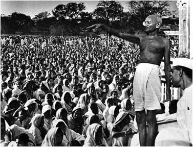

1917

When Gandhi returned to India from South Africa in 1915, and saw peasants in northern India
oppressed by indigo planters, he tried to use the same methods that he had used in South Africa to organize
mass uprisings by people to protest against injustice.
Champaran Satyagraha was the first popular satyagraha movement. The Champaran Satyagraha gave direction to
India's youth and freedom struggle, which was tottering between moderates who prescribed Indian
participation within the British colonial system, and the extremists from Bengal who advocated the use of
violent methods to topple the British colonialists in India.
Many tenants alleged that Landlords had used strong-arm tactics to exact illegal cesses and to
extort them in other ways. This issue had been highlighted by a number of lawyer/politicians and there had
also been a Commission of Inquiry. Raj Kumar Shukla, a money lender who also owned some land, persuaded
Gandhi to go to Champaran and thus, the Champaran Satyagraha began. Gandhi arrived in Champaran 10 April
1917 with a team of eminent lawyers:
1. Brajkishore Prasad
2. Rajendra Prasad
3. Anugrah Narayan Sinha
4. Ramnavmi Prasad
5. Acharya Kripalani and others
Building on confidence of villagers, Gandhi began leading the clean-up of villages, building of schools and hospitals and encouraging the village leaders to undo purdah, untouchability and the suppression of women. Gandhi set up two more basic schools at Bhitiharwa with the help of Sant Raut in West Champaran and Madhuban in this district.
